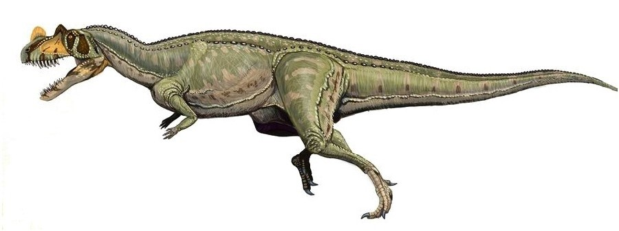
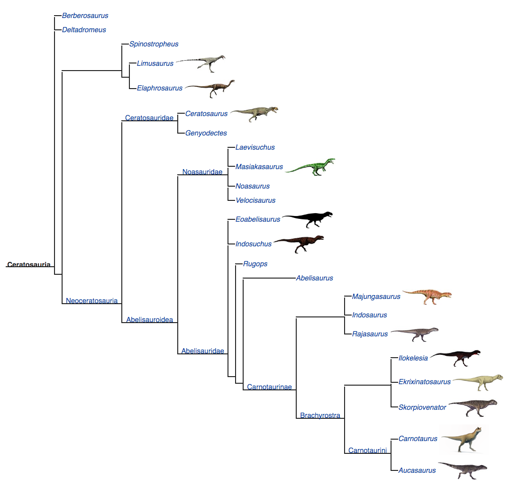

Ceratosauria was the next major group of Theropods that evolved, more manifold than Coelophysoidea. They are defined as dinosaurs that share a closer relationship with Ceratosaurus than modern birds. They started to show differences and break off from the main branch of Theropoda in the Late Triassic epoch, when they first evolved. They were more advanced than Coelophysoids and reached greater sizes. These killers were still primitive and there were even more efficient predators to evolve.

Ceratosauria was named after the species Ceratosaurus nasicornis, described by Othniel Charles Marsh. It was the first Ceratosaur to be discovered. This was a medium sized Theropod in the Jurassic period, about 28 feet long on average. It had a pair of horns on its head, right above the eyes, which is why its name means “horned lizard”. Ceratosaurus is also the only known dinosaur for which there is evidence of short spikes running down the back.
This subset of Theropoda is also called the “sister group” of Tetanurae, which was a much more advanced and diversified group at about the same taxonomic rank as Ceratosauria; both subsets of Averostra. As stated previously, Coelophysoidea was actually thought to share a more recent common ancestry with Ceratosauria, and to even be a subset of it. This was proved false later on.
Although Ceratosauria split off from other Theropods in the Late Triassic, their fossils are extremely scarce prior to the Mid Jurassic. Scientists think that the reason for this is not because of the scarcity of the Ceratosaurs in those times but a poor fossil record. There are many gaps in the fossil record like this. A similar case exists for Ceratosaurs in the Lower Cretaceous rocks, especially for the group Abelisauroidea. As more and more discoveries are being made, scientists are making fruitful attempts to fill in some of these gaps and alter the phylogeny of Ceratosaurs, rearrange the groups and families within it and find the most basal members.
Below is the cladogram of Ceratosauria. The most basally placed group, Neoceratosauria, splits into Ceratosauridae, the family which Ceratosaurus belongs to, and the more diverse Abelisauroidea. Abelisauroidea is divided into Noasauridae and Abelisauridae, which is the family of Abelisaurus. Under Abelisauridae resides the subfamily Carnotaurinae. This cladogram was established based on an analysis by Diego Pol and Oliver W. M. Rauhut in 2012.

More recently, a different conclusion was reached in a 2017 research paper based on the ontogeny of a small Noasaurid Limusaurus. One major difference is that Noasauridae is placed more basal than Ceratosaurus, the latter being within Abelisauridae by definition.
Most Ceratosaurs had an increase in the height of their skulls and short front limbs with four digits each. Somewhat like the Coelophysoids, there was a loose connection between their maxilla and premaxilla. Most of these features aren’t very prominent in more basal Ceratosaurs like Ceratosaurus itself, which was kind of an oddball. It looked more like other basal Theropods. Ceratosaurus had a rather long skull and its front limbs were moderately long.
However, these features are quite evident in most Abelisauroids. Their front limbs evolved to be extremely small. The Abelisauroids are among the theropods with the shortest front limbs. Much as they shrunk, their front limbs continued to have four digits each. They also had quite short and stout skulls with high orientation. Their teeth were also short, but they were strong and sharp. Carnotaurus is a good example of an Abelisauroid that shows these features. These are the skeletons of Ceratosaurus(top) and Carnotaurus(bottom). Notice the sheer differences in the skull and front limbs, although both are Ceratosaurs.


Carnotaurus means “meat eating bull”. It was named thus because of the pair of horns on its head, which made it look like a bull. It was the Theropod with the shortest limbs, shorter than Tyrannosaurus. Its sizes varied from 25 to 30 feet. It was found mainly in South America and preyed on small to medium sized herbivorous dinosaurs.
Ceratosaurs were Theropods, and so they were carnivorous, with the exception of Limusaurus, which was a small herbivorous Ceratosaur with a toothless beak.
Scientists still debate, however, on the eating habits of Ceratosaurs, especially Abelisauroids. For example, some scientists say that Carnotaurus couldn’t subdue large dinosaurs that easily, but it could catch smaller and swifter herbivorous dinosaurs using its quick but weak bite. Other scientists say that it had a rather strong bite and was capable of hunting bigger prey. Some scientists even suggest its skull was designed for scavenging.
Disagreements on the eating habit of Ceratosaurus also go on. It was once argued that Ceratosaurus thrived on aquatic based meat but this was later proved wrong. Ceratosaurus tooth marks were discovered on the bones of another Theropod, Allosaurus. This suggested that Ceratosaurus may have fought with its contemporary over food or territory, or that these two killers may have eaten each other or scavenged each other’s carcasses.
Next, we shall look at the sister group of Ceratosauria: Tetanurae, the way more diversified and advanced group of killers.